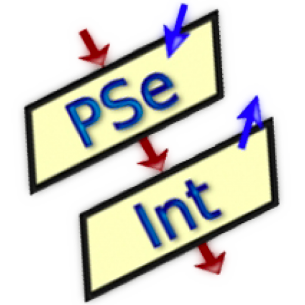
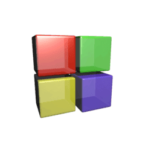

| Desarrollo de Sistemas | |
|---|---|
| Sistemas de Información | Programación |

En el submódulo Sistemas de Información llevamos a cabo el como realizar un software que te pueda ser útil en tu negcocio llevando a cabo el almacenamiento de datos, modelando el sistema mediante el diagrama de Casos de Usos donde se plasmarian las funcionalidades que debe llevar a cabo el sistema, esto lo realizamos en el programa StarUML.
También empleamos el programa de Excel para realizar algunas interfaz que deberá crear nuestro sistema para tener mejor control de los datos obtenidos en éste.
En el submódulo Programación realizamos distintos algoritmos para resolver alguna problemática, luego creamos un pseudocódigo en el porograma PSeInt, y al final exportamos el diagrama.
Esto era previo a la programación para ir conociendo algunos atributos que son necesarios para llevar a cabo el manejo correcto que llege a la solucción de la problemática previamente planteada
Luego de trabajar con PSeInt, trabajamos con el programa Code:Blocks, donde conocimos las distintas variables y operaciones para un manejo correcto de dicho programa.
En este programa empleamos lo hecho anteriormente en PSeInt pero ahora adaptandolo al lenguaje C++